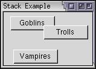

Stack Positioning
This section will describe how to position items in a stack.
Placement of Stack Children
Normally, the child elements of a stack stretch to fit the size of the stack. However, you may also place the children at specific coordinates. For example, if a stack has two buttons as children, one may be placed 20 pixels from the left edge and 50 pixels from the top edge. The second button can be placed at 100 pixels from the left edge and 5 pixels from the top edge.
The position of a child element may be specified by placing two attributes on the element. For the horizontal position, use the left attribute and for the vertical position, use the top attribute. If you don't put these attributes on a child of a stack, the child will stretch to fit the size of the stack.
Example 4.2.1: Source View<stack> <button label="Goblins" left="5" top="5"/> <button label="Trolls" left="60" top="20"/> <button label="Vampires" left="10" top="60"/> </stack>
 The stack here contains three elements, each positioned at the coordinates given by the left and top attributes. Here, all three children are buttons, but the elements do not have to be same type. They may be any element, including boxes and other stacks.
The size of a stack is determined by the positions of the child elements. It is always sized so that all of the child elements are visible. So if you set a left attribute to 400, the stack will have a width around 400 pixels plus the width of the element. You can override this size with the various style properties such as width and max-width.
You can use a script to adjust the value of the left and top attributes and thus make the elements move around. Stacks have the advantage that when one absolutely positioned element changes its position, the position of the other elements is not affected. If you tried to move elements in a regular box, other elements might shuffle their positions around.
It is also possible to place the child elements so that they overlap. When drawing the child elements, the elements are shown in the order that they appear in the stack. That is, the first child of the stack appears at the back, the next child appears next and so on. The last element appears on top. You can use the DOM functions to move the order of the elements around.
When responding to mouse events, the elements on top will capture the events first. That means that if two buttons overlap, the top button will capture a mouse click where it covers the other one.
(Next) The next section describes tabboxes which are like decks but provide their own navigation.
Examples: 4.2.1